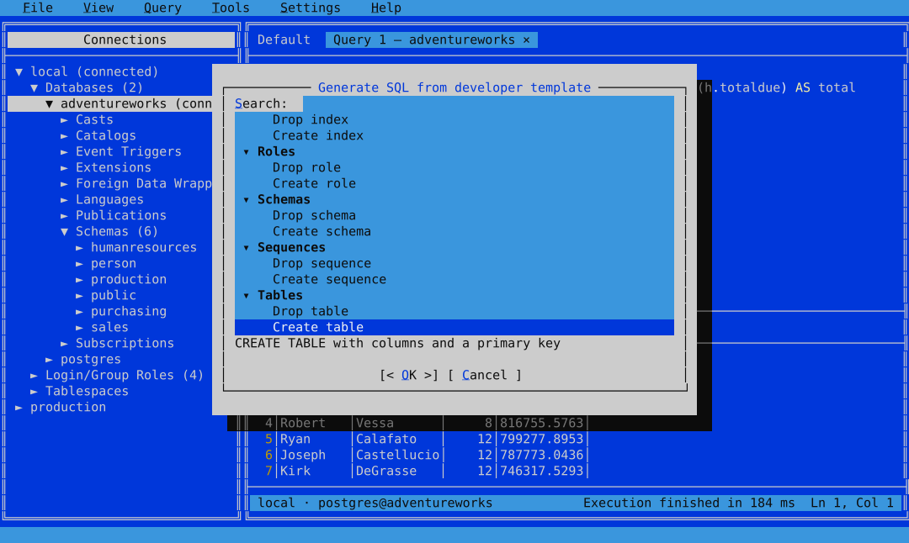
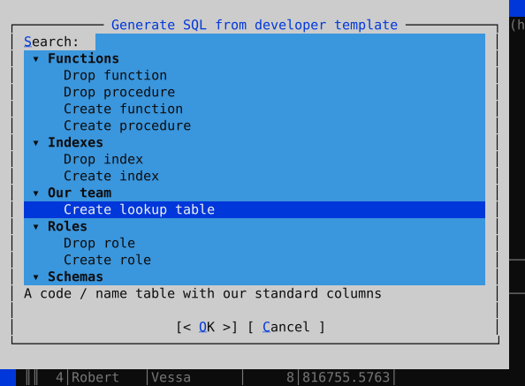

Developer templates (F7)
Pick a template, fill in a short form, and get complete, ready-to-run SQL in your editor:
CREATE TABLE, CREATE FUNCTION, DROP INDEX and more. The templates are plain text
files — you can add your own, with the template editor or by hand.
Installing the templates
pgtc reads templates from one folder in your user directory. The templates that come with pgtc are built into the program and must be copied there once:
- on the command line:
pgtc --setuporpgtc --install-templates; - or in the program: (or ).
Until then F7 answers No developer templates — run Settings → Install templates.
When the folder already exists — for example after you updated pgtc — installing asks first whether to overwrite the templates that come with pgtc. Yes brings them up to date; No changes nothing. In both cases:
- pgtc never deletes a template file;
- files with other names — your own templates — are never touched.
tells you where the folder is (see also below).
Using a template
- Go to a connected query tab and put the cursor where the SQL should be inserted.
- Press F7 (Esc 7, or ).
- Choose a template in the picker and press Enter.
- Fill in the form. The preview on the right shows the SQL as it grows.
- Press Enter on OK (or Ctrl+Enter from any field, where your terminal supports it). The SQL is inserted into the editor at the cursor; a selection is replaced.
- Read it, change it if you like, and run it with F5.
A template never runs anything. It only writes text into your editor.
The tab must be connected, because the lists in the form — schemas, tables, types — are read from the tab's database. While a result of the tab is paused (more rows available) or an export runs, F7 asks you to finish or close the result first.
The picker

The picker shows the templates as a tree: the folders are the categories (Functions, Indexes, Tables, …), the rows below are the templates.
| Key | What it does |
|---|---|
| Up / Down, PgUp / PgDn | Move in the tree. |
| Enter | Opens the form of the selected template. |
| Alt+S | Jumps to the Search box. |
| Esc | Closes the picker. |
Searching

drop typed into Search: only the DROP templates are left.Type into Search: the tree keeps only the templates whose name or description
contains the text. So index finds Create index and Drop index, and enum finds
Create enum type and — through its description — Drop type.
The templates that come with pgtc
| Category | Template | It asks for |
|---|---|---|
| Functions | Create function | Schema, name, arguments (name, type, default), return type, language, volatility, security definer, body |
| Create procedure | Schema, name, arguments, body | |
| Drop function | The function (with its argument types), IF EXISTS, dependent objects | |
| Drop procedure | The procedure, IF EXISTS, dependent objects | |
| Indexes | Create index | Table, name, UNIQUE, CONCURRENTLY, method, columns or expressions with their order, NULLS NOT DISTINCT, WHERE |
| Drop index | The index, IF EXISTS, dependent objects | |
| Roles | Create role | Name, login, create databases, member of |
| Drop role | The role, IF EXISTS, and optionally a role to hand its objects over to | |
| Schemas | Create schema | Name, owner, IF NOT EXISTS |
| Drop schema | The schema, IF EXISTS, dependent objects | |
| Sequences | Create sequence | Schema, name, start, increment, owned by |
| Drop sequence | The sequence, IF EXISTS, dependent objects | |
| Tables | Create table | Schema, name, IF NOT EXISTS, columns (name, type, NOT NULL, primary key, default) |
| Drop table | The table, IF EXISTS, dependent objects | |
| Triggers | Create trigger with function | Table, name, timing, on insert / update / delete, row or statement level, body |
| Drop trigger | The trigger (with its table), IF EXISTS, dependent objects | |
| Types | Create enum type | Schema, name, labels |
| Create domain | Schema, name, base type, NOT NULL, CHECK | |
| Drop type | The type (enum, composite, range), IF EXISTS, dependent objects | |
| Drop domain | The domain, IF EXISTS, dependent objects | |
| Views | Create view | Schema, name, query |
| Create materialized view | Schema, name, query, WITH DATA | |
| Drop view | The view, IF EXISTS, dependent objects | |
| Drop materialized view | The materialized view, IF EXISTS, dependent objects |
The form

The form fills the window. On the left are the fields of the template, on the right the preview: the SQL that OK would insert, rebuilt after every change. On a narrow terminal the preview is below the form.
- A
*after a label marks a field that must be filled in. - The line above the buttons shows the help text of the field you are in, if the template has one.
- If something is missing or wrong — a required field is empty, a name is not valid — the preview shows the problem instead of SQL, and OK does not insert anything.
| Key | What it does |
|---|---|
| Tab / Shift+Tab | Next / previous field or button. |
| Enter | On OK: inserts the SQL. On a drop-down: opens it. On a list: edits the row. In a SQL box: a new line. |
| Ctrl+Enter | OK from any field (where the terminal reports it). |
| Esc | Closes the form without inserting anything. |
The kinds of fields
| Field | Looks like | How to use it |
|---|---|---|
| Text | An input line | Type. Used for things that are not names: a return type, a default expression. |
| Name | An input line | Type a PostgreSQL name. It is checked, and quoted in the SQL when needed — type Order Items, get "Order Items". |
| Number | An input line | Type a number. |
| Checkbox | [ ] / [x] | Space toggles it. |
| Drop-down | A value with ▼ | Enter or Space opens the list; Left / Right change the value directly. See drop-down lists. |
| List | Rows with buttons below | See Lists. |
| SQL box | A framed editor with the field's name as its title | See SQL boxes. |
Drop-downs filled from the database

16/19
in the frame: typing narrows the list; the 16th of 19 entries is selected.Fields such as Schema, Table, Owner list the real objects of the tab's database, read when the
form opens (loading… for a moment). Objects are shown with their schema (sales.customer), functions
with their argument types. System schemas and objects that belong to extensions are left out.
A long list is filtered by typing: open it and type a part of the name.
The form picks up the tree's selection
If the object selected in the object tree belongs to the same server and database as the query tab, the form uses it as its starting value:
- a table selected in the tree → Drop table already shows that table, Create index already has it as its table;
- a table (or anything else) inside a schema → Create table, Create function … start with that schema;
- a trigger selected → Drop trigger shows that trigger and its table.
So the quick way to drop a table is: select it in the tree, go to a query tab, F7, Drop table, Enter — the statement is written. You can always choose another value in the drop-down.
Lists: columns, arguments, labels
A list field holds any number of rows — the columns of a table, the arguments of a function. Each row is shown in one line; below the list are its buttons.

note: a small dialog with the fields of one row.| Button | What it does |
|---|---|
| Add | Opens the row dialog, empty; OK adds the row at the end. |
| Edit | Opens the row dialog with the selected row. Enter on a row does the same. |
| Delete | Removes the selected row. |
| Up / Down | Move the selected row — the order of the rows is the order in the SQL. |
In the list, Up / Down select a row; Tab goes on to the buttons.
SQL boxes

A field that takes several lines of SQL — a function body, the query of a view, a CHECK expression — is
a small SQL editor inside the form.
- The usual editor keys work: moving, selecting, copy and paste, undo, syntax colours.
- Autocomplete works as in the query tab; Esc closes only its list, not the form.
- Enter makes a new line; Tab leaves the box for the next field.
- You can paste a long text into it.
The DROP templates
Every DROP template has the same two options:
| Option | Default | Meaning |
|---|---|---|
| IF EXISTS | off | On: no error if the object is not there. |
| Dependent objects | RESTRICT | RESTRICT: the drop fails if anything depends on the object — nothing else is dropped by accident. CASCADE: everything that depends on it is dropped too (views on a table, foreign keys pointing to it, …). |
Drop role has no CASCADE, because PostgreSQL has none for roles. Instead it offers
Reassign owned objects to: choose a role, and the script starts with
REASSIGN OWNED BY old_role TO new_role;
DROP OWNED BY old_role;
DROP ROLE old_role;with a comment reminding you that the first two statements act on the current database only — a role that owns objects in several databases needs them run in each.
Writing your own templates
A template is a text file with the extension .pgtemplate. The comfortable way to make one is the
developer template editor
(): it writes the file for you, checks it and shows its result
while you type.
The rest of this page describes the file itself — what the editor writes, and what you can also write with any text editor and put into the templates folder. pgtc looks into the folder while it runs and offers every template it finds.
Where the files go
| Platform | Templates folder |
|---|---|
| Linux | ~/.local/share/pgtc/developer_templates |
| macOS | ~/Library/Application Support/pgtc/developer_templates |
| Windows | %APPDATA%\pgtc\developer_templates |
developer_templates/
default/ templates for every server version
Functions/
function.pgtemplate
drop_function.pgtemplate
Tables/
table.pgtemplate
Our team/ your own category
audit_table.pgtemplate
12_plus/ replacements for PostgreSQL 12 and newer
Triggers/
trigger.pgtemplate- The first level is a version folder. Put your templates into
default. - The folder below it is the category shown in the picker. Make a new folder to make a new category.
- The file name can be anything; the picker shows the
namewritten in the file.
Version folders
A template sometimes has to be different for newer servers. Put the newer variant, under the same folder and
file name, into a folder called N_plus — 15_plus, 16_plus. For the server of
the query tab, pgtc uses the file from the newest version folder that is not newer than the server; if no version
folder has the file, the one in default. (For small differences you do not need this — see
server checks in the body.)
If you change a template that comes with pgtc, save it under another file name (and give it
another name). Installing the templates again overwrites the files that come with pgtc, but never
touches files with other names. (The template editor reminds you when you
save such a file.)
The file
A template has two parts, each started by a line +++:
+++
header: the name, the description and the fields of the form
+++
body: the SQL, with places where the values of the fields goHere is a complete, small template — a table that every team has its own rules for. Save it as
default/Our team/lookup_table.pgtemplate:
+++
name = "Create lookup table"
description = "A code / name table with our standard columns"
[[param]]
name = "schema"
label = "Schema"
type = "choice"
source = "schemas"
default = "public"
required = true
[[param]]
name = "name"
label = "Table name"
type = "identifier"
required = true
help = "Singular, lower case: country, orderstatus"
[[param]]
name = "code_length"
label = "Length of the code"
type = "number"
default = "10"
[[param]]
name = "with_audit"
label = "Audit columns (modifiedby, modifieddate)"
type = "bool"
+++
CREATE TABLE {{ schema|ident }}.{{ name|ident }} (
code varchar({{ code_length }}) NOT NULL,
name text NOT NULL,
{% if with_audit %}
modifiedby text NOT NULL DEFAULT CURRENT_USER,
modifieddate timestamp NOT NULL DEFAULT now(),
{% endif %}
CONSTRAINT {{ (name ~ "_pkey")|ident }} PRIMARY KEY (code)
);
COMMENT ON TABLE {{ schema|ident }}.{{ name|ident }} IS 'Lookup table';Press F7: the picker has a new category Our team with Create lookup table, and the form has four fields.


The header
The header is written in TOML: key = value lines; texts in double quotes.
| Key | Meaning |
|---|---|
name | The label in the picker. Without it, the file name is shown. |
description | One line shown under the picker's tree, and searched by the search box. |
[[param]] | Starts one field of the form. The fields appear in the order written. |
Inside a [[param]]:
| Key | Needed | Meaning |
|---|---|---|
name | yes | The name of the value in the body: {{ name }}. Letters, digits, _. |
type | yes | The kind of field — see the next table. |
label | The text shown in the form. Without it, the name. | |
required | true: the field must be filled in; the form marks it with *. | |
default | The value the field starts with. | |
help | A hint shown at the bottom of the form while the field has the focus. |
Field types
type | The form shows | Extra keys | In the body |
|---|---|---|---|
text | An input line | The text as typed. | |
identifier | An input line, checked as a PostgreSQL name | The name; write {{ x|ident }} to get it quoted when needed. | |
number | An input line for a number | The number. | |
bool | A checkbox | True or false: {% if x %}…{% endif %}. | |
choice | A drop-down | One of: options = ["a", "b"] — fixed values;source = "tables" — a built-in list from the database (below);query = "SELECT …" — your own list: a query that returns one column of names | The chosen value. |
sql | A SQL box, 5 rows high | fill = true: the box takes all rows the form has left | The text, with its line breaks. |
list | A list of rows with Add / Edit / Delete / Up / Down | [[param.fields]] blocks: the fields of one row, written like [[param]] | A sequence of rows: {% for r in x %}{{ r.field }}{% endfor %}. |
A list is written like this — the fields of a row are indented only for readability:
[[param]]
name = "columns"
label = "Columns"
type = "list"
required = true
[[param.fields]]
name = "col_name"
label = "Name"
type = "identifier"
required = true
[[param.fields]]
name = "col_type"
label = "Type"
type = "text"
default = "text"Lists from the database: source
source | Lists | {{ value|ident }} writes |
|---|---|---|
schemas | Schemas | sales |
tables | Tables, partitioned tables, foreign tables | sales.customer |
views | Views | sales.vsalesperson |
materialized_views | Materialized views | sales.mv |
sequences | Sequences | sales.customer_customerid_seq |
functions | Functions, with their argument types | sales.customer_total(integer, integer) |
procedures | Procedures, with their argument types | sales.close_month(date) |
types | Data types for columns: the common built-in types and your own | integer, sales.mytype |
user_types | Your own types (enum, composite, range) — no domains | sales.orderstatus |
domains | Domains | public."Flag" |
indexes | Indexes that can be dropped on their own (not those of constraints) | sales.ix_customer_territoryid |
triggers | Triggers, with their table | trg ON sales.customer |
roles | Roles | reporting |
- Names are quoted where PostgreSQL needs it —
sales."Order Items"— you do not have to think about it. - A value from the database has parts you can use on their own:
{{ table.schema }}and{{ table.name }}; a function value also hasargs, a trigger valuetable. - These built-in sources are the ones the tree's selection fills in. A list from your own
queryis not pre-filled.
The body
The body is the SQL, with Jinja marks where the form's values go. You need only a few of them:
| Write | Meaning |
|---|---|
{{ name }} | The value of field name, as it is. |
{{ name|ident }} | The value as a correctly quoted identifier. Use it for every name — schema, table, column, function. |
{% if flag %} … {% endif %} | The text between is written only if the checkbox is checked — or, for other fields, only if the field is not empty. {% else %} is allowed. |
{% if method != "btree" %} … {% endif %} | Comparing a value. |
{% for c in columns %} … {% endfor %} | Repeats the text for every row of a list; inside, {{ c.col_name }} is a field of the row. |
{% if not loop.last %},{% endif %} | Inside a for: a comma after every row except the last. |
{{ (name ~ "_pkey")|ident }} | ~ joins texts: here a constraint name made from the table name. |
{% if has("NullsNotDistinct") %} … {% endif %} | A server check: the text is written only if the tab's server has that feature. Lets one template serve several PostgreSQL versions. |
The complete body of Create table, as an example of a list and a condition:
{% set pk = columns|selectattr("primary_key")|list %}
CREATE TABLE {% if if_not_exists %}IF NOT EXISTS {% endif %}{{ schema|ident }}.{{ name|ident }} (
{% for c in columns %}
{{ c.col_name|ident }} {{ c.col_type }}{% if c.not_null or c.primary_key %} NOT NULL{% endif %}{% if c.col_default %} DEFAULT {{ c.col_default }}{% endif %}{% if not loop.last or pk %},{% endif %}
{% endfor %}
{% if pk %}
CONSTRAINT {{ (name ~ "_pkey")|ident }} PRIMARY KEY ({% for c in pk %}{{ c.col_name|ident }}{% if not loop.last %}, {% endif %}{% endfor %})
{% endif %}
);A line that holds only a {% … %} mark leaves no empty line in the result.
Tips
- Start from a copy. The installed files in
default/show every field type in use. Copy one to a new name and change it — Copy in the template manager does it. - Test in the form. In the template editor press F5. For a file written by hand: save it, press F7 in a query tab, open the template — the preview shows the result at once. A mistake in the file — a missing quote in the header, an unknown field in the body — is reported instead of the SQL.
- Keep the form short. Ask for what differs each time; write the rest into the body.
- Not possible (for now): showing or hiding a field depending on another one, checking one field against
another, forms with several pages. An
{% if %}in the body covers most of these.